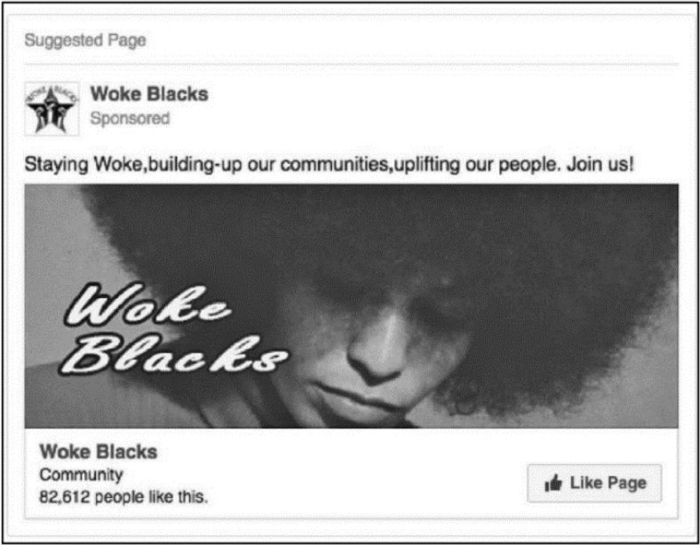

Throughout the preparation for the election for 2016, social media proved to be one of the largest influences. Candidates with teams that were social media savvy proved to have a large upper hand. Soon enough, something very malicious surfaces. Thousands of facebook posts, instagram posts, and millions of tweets on twitter purposefully targeted at minority groups to persuade them to not vote, or direct their votes towards third-party candidates.
In 2017, data shows Russian owned Internet Research Agency creating accounts or buying advertisements on social media sites. The SSCI (United States Select Committee on Intelligence) claims Russian operatives under the Russian company IRA (International Research Agency) used “targeted advertisements, intentionally falsified news articles, self-generated content, and social media platforms” in order to mislead and deceive tens of millions. The essence is that, because minority groups– especially African Americans– lean left, ads targeted towards them telling them to “boycott the election” by not voting, or to use their vote on third party candidates, which basically directs votes away from Hillary Clinton.
 A Facebook group titled 'Woke Blacks' as truly just used as bait to spread propaganda. Notice that there are over 80,000 members!Protect yourself
While Facebook has been cracking down on misinformation, Twitter has altogether banned all political ads from their website. However, this doesn’t mean that you may not see propaganda tweets through peoples’ personal accounts. Do not believe what you see on the internet at first glance. Do research, and make sure to vote, because every vote counts.
Aceves, William. “Virtual Hatred: How Russia Tried to Start a Race War in the United States.” Michigan Journal of Race & Law, no. 24.2, 2019, p. 177., https://doi.org/10.36643/mjrl.24.2.virtual.
Document from SSCI · Document from UMich